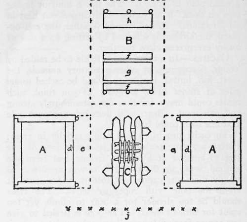
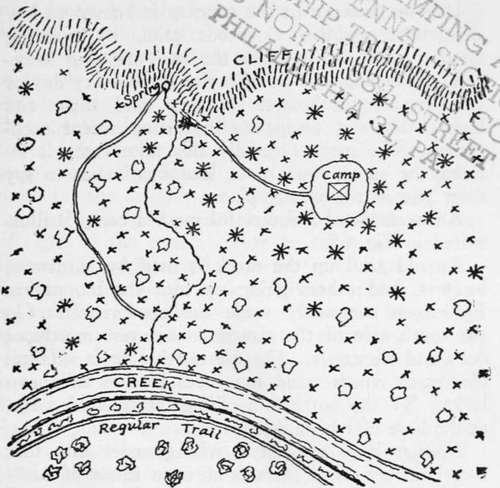

Tomahawk Shelters. Axemen's Camps. Caches. Masked Camps. Part 5
Description
This section is from the book "Camping And Woodcraft", by Horace Kephart. Also available from Amazon: Camping and Woodcraft.
Tomahawk Shelters. Axemen's Camps. Caches. Masked Camps. Part 5
A good place for a cache is on an islet in a river or lake, so small that there are not likely to be any predatory animals living on it.
In the North, where wolves and wolverenes must be guarded against, the best cache for meat is made by cutting a hole through the ice of a stream or lak& fastening the sack of meat to a stick by a rope or hide thong, and letting it down into the water, the stick resting across the orifice. Lumps of ice are then piled into and over the hole, and water is poured on* them, which freezes the mass together into a mound a foot or two high. Or a place may be chosen in shoal water where there is no current, a hole'broken through, the meat dropped in, and the surface left to freeze over. Warburton Pike says that meat which he cached in this way was found fiesh and palatable two months afterward, although the outside was discolored by its long soaking.
Fig. 67. Camp Plan AA—Log Lean-tos; B—Kitchen; C—Camp-fire; dd—Deacon Seats; ee—Overhangs; ff—Benches; g—Table; h—Pantry; j—Wind Screen.
On the dry plains and prairies of the West, caches were made in the ground. How these subterranean hiding places were arrarfged was described by Lewis and Clarke, who, of course, adopted the method of the plains Indians:
"In the high plain on the north side of the Missouri, and 40 yards from a steep bluff, we chose a dry situation; then describing a small circle of about 20 inches diameter, we removed the sod as gently and carefully as possible. The hole is then sunk perpendicularly for a foot deep, or more if the ground be not firm. It is now worked gradually wider as we descend, till at length it becomes six or seven feet deep, shaped nearly like a kettle, or the lower part of a large still, with the bottom somewhat sunk at the center. As the earth is dug, it is handed up on a vessel and carefully laid on a cloth, in which it is carried away, and usually it is thrown into the river, or concealed so as to leave nc trace of it. A floor of three or four inches in thickness is then made of dry sticks, on which is thrown hay, or a hide perfectly dry. The goods, being well aired and dried are laid on this floor, and prevented from touching the wall by other dried sticks, in proportion as the merchandise is stored away. When the hole is nearly full, a skin is laid over the goods, and on this earth is thrown and beaten down until, with the ad-diton of the sod first removed, the whole is on a level with the ground and there remains not the slightest appearance of an excavation".
Even after such precautions, caches sometimes were discovered and dug into by wolves or by Indians' dogs. Another trouble was that they were liable to cave in, if there were no trees with which to timber them. Of course, they had to be situated high enough to be out of reach of river overflows. Still, this method of storing supplies for the future was the best that could be devised in such a situation, and generally it turned out all right. Even such food as dried fish was kept a long time uninjured in underground caches lined with dead grass and hides* In the far wilderness a cache is considered sacred by all woodsmen, white or red; hence it need not be concealed from prying eyes and itching fingers. But in woods that are frequented by all sorts of vagabonds and ne'er-do-wells, a hiding place for one's supplies must be well chosen to escape the attention of thieves or malicious people. For temporary concealment, a hollow log may do, "fn case of such articles as cannot be gnawed into by rodents or entered by insects. Anything that is not injured by dampness can be hidden more securely by digging under an old embedded log, laying it there, covering it up, and restoring the surface to its former appearance.
A secret storehouse for tools, utensils, etc., that you may wish to leave near the camp until next season may be dug in a dry bank and roofed over with logs, brush, and then a layer of earth, like a dug-out, the interior being lined with poles and dry grass, brush, or bark.
Another way, when you have a cabin, is to floor it with split puncheons conspicuously spiked to walls and sleepers. One or two of these puncheons have only spike heads driven in the usual places, and are removable. They are fitted with hidden fastenings to keep them firmly in place. This false flooring communicates with a miniature cellar, rock lined, under the middle of the cabin. Boxes are made that can be sealed air-tight (for example, with adhesive plaster). Articles to be stored are thoroughly dried, sealed up in the boxes, on a day when the air is not moist, and the chests are placed in the cellar, resting on flat rocks.
Generally I prefer to build the cache separate from the camp, and hidden at some distance from it. Then, in case the camp is entered by prowlers, or burned out, I will not be minus tools and bedding at the next visit. The cache may be built of rocks under the overhang of a ledge where nobody else is likely to go, or of notched logs with slab roof spiked down, or in other ways, according to circumstances. One will use his wits in utilizing such facilities as the country affords.
Masked Camps
I have had occasion to locate my lone camp where it would be out of the way of thieves or interlopers, beast or human, as I would be away a good part of the time. Such devices will vary, of course, with the locality one is in. Here are a few general principles to bear in mind.
The camp is to be situated where not only men but cattle and wild hogs are unlikely to go. There should be nothing in the neighborhood to attract any of the various classes of people who frequent thr woods. Study each of these classes in turn, anJ their habits. ,vk> VAV .yb^V^*
Fig. 68. A Masked Camp.
Continue to:
- prev: Tomahawk Shelters. Axemen's Camps. Caches. Masked Camps. Part 4
- Table of Contents
- next: Tomahawk Shelters. Axemen's Camps. Caches. Masked Camps. Part 6